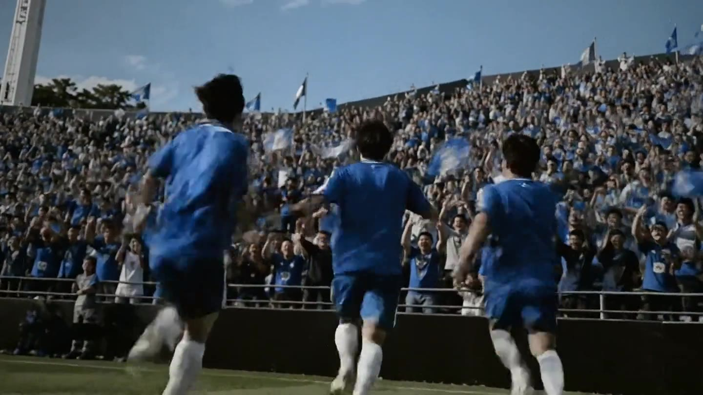
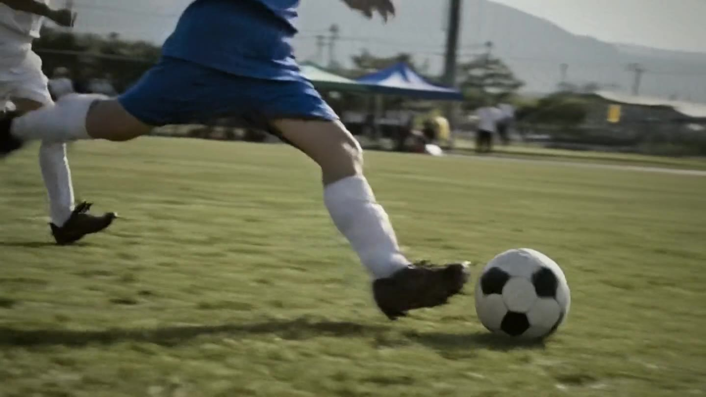
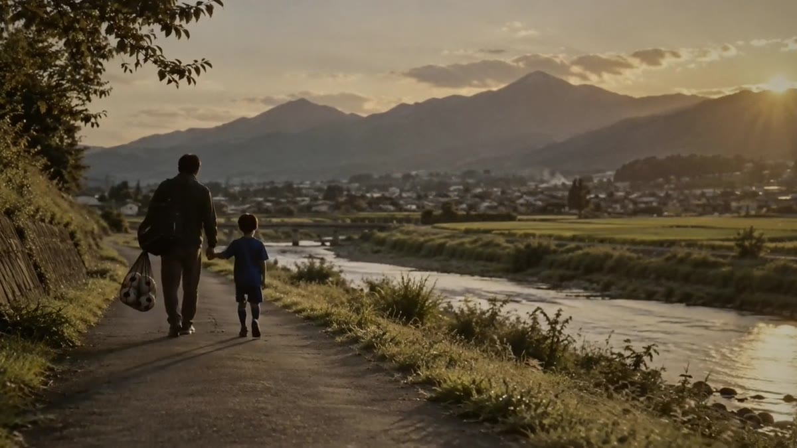

01 / DREAM
夢
サッカーに情熱を燃やす一人ひとりの「夢」を育みます。
長野県サッカー協会のミッション・ビジョン・バリューと中期ビジョン、事業内容、協会概要と、事業計画・事業報告などの資料を掲載しています。
Life+1
サッカーを通じて人々の人生をより豊かに、より輝かせたいと願っています。日々の生活に喜びや感動、健康、そして人とのつながりをプラスする。
サッカーを単なるスポーツではなく、人生を豊かにするツールとして捉え、無限の可能性を追求します。
私たちは、サッカーに情熱を燃やす一人ひとりの「夢」を育み、「挑戦」を支え、たくましい「成長」へと導きます。そうして育った人材が、やがて地域社会に「貢献」し、信州の未来を切り拓く力となる。
その豊かになった信州が、また次の世代の夢を育むという「終わらない好循環」が機能している状態を目指します。
サッカーに情熱を燃やす一人ひとりの「夢」を育みます。

一人ひとりの「挑戦」を支えます。

たくましい「成長」へと導きます。

育った人材が地域社会に「貢献」し、信州の未来を切り拓く力となります。
「強さ」と「楽しさ」を支える、揺るぎない品格。
Respect
サッカーに関わる仲間、対戦相手、審判、そして支えてくれる家族や地域の人々。私たちは多様性を認め合い、すべての人に対して感謝と敬意を持ち、安心・安全な環境を築きます。
Fair Play
ピッチ上のルールを守ることはもちろん、ピッチ外の事業活動や組織運営においても高い倫理観（インテグリティ）を持ち、暴力・暴言・差別のない、社会から信頼されるフェアな組織であり続けます。
Sustainable
私たちは、サッカーの力を使って地域の社会課題（健康、教育、環境など）の解決に挑戦します。そして、豊かな自然環境や健全な組織基盤を維持し、今より良い状態のサッカー環境を未来の子どもたちへつなぎます。
2028信州国スポを契機とした地域共創型FAへの進化
クラブに関わる全員（経営・強化・育成）の活動方針を共有・理解することで、独自のフットボールフィロソフィーを確立し、競技力向上と普及を両立させます。
自治体、企業、学校、地域住民など多様なステークホルダーと共に対等な立場で連携（共創）することで、長野県の構造的な社会課題解決に積極的に挑戦します。
DX化とガバナンスの強化を通じて、持続的成長を可能にする経営基盤を確立します。
2026年度策定、2027年〜2031年実行の中期経営計画より。
NAGANO FA 2020宣言「各種大会やチームにウェルフェアオフィサーを置きます。」
長野県サッカー協会では、誰もが安心・安全にスポーツに参加できる環境をめざし、ウェルフェアオフィサーの配置やリスペクト活動に取り組んでいます。その一環として、育成年代のチームにおいて日々の活動や運営で目指すべき内容をガイドラインとして示し、それを確認するための「健全育成クラブガイドラインチェックリスト」を作成しました。
チェックリストの実施は、Google formでのご回答をお願いします。回答されたクラブについて、希望がある場合は、県協会HPへ「健全育成・暴力根絶への取り組みを行っているクラブ＝健全育成クラブ」として掲出いたします。回答内容については、チームが特定されることのないよう統計処理させていただきます。
一般社団法人 長野県サッカー協会の事業です。
※ファイルサイズが大きいため分割してあります。